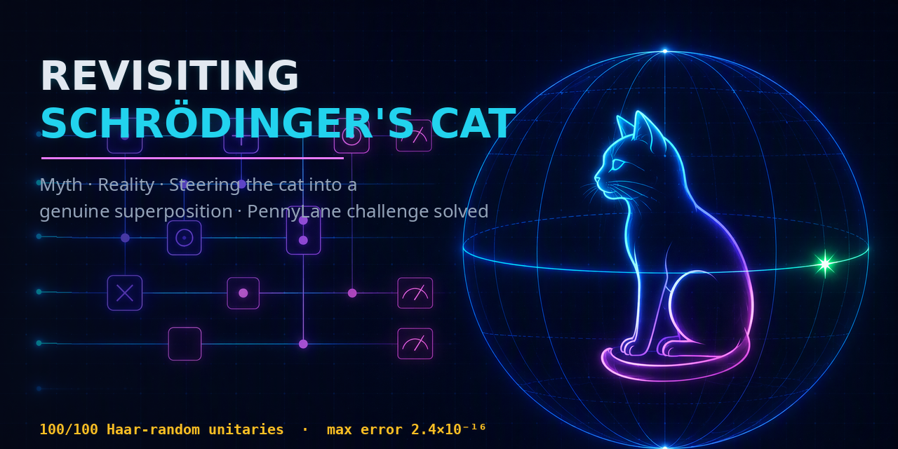
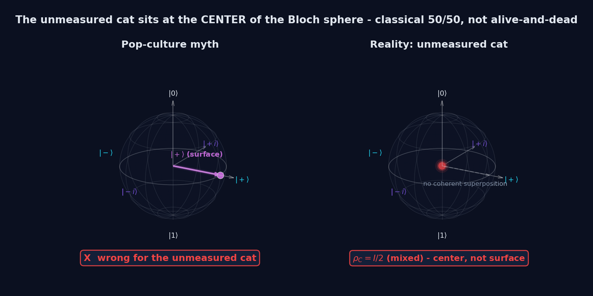
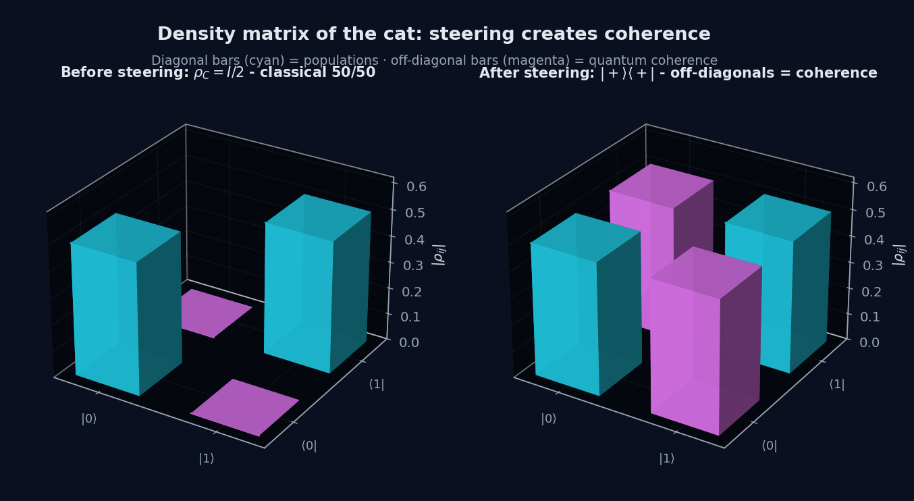
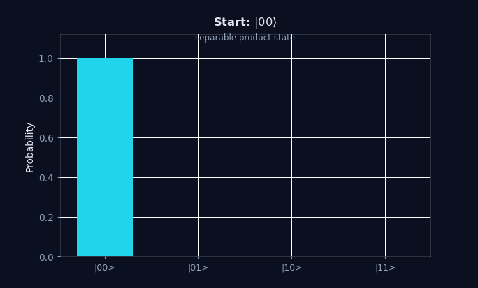
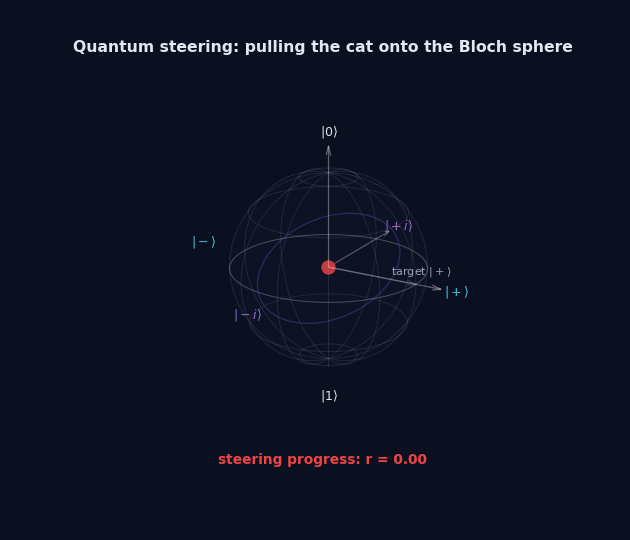
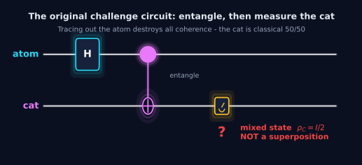

Implementation reliability
Does the code reproduce the derived equality across diverse typical inputs to machine precision?
A 12-question, zero-prerequisite OER
A validator can print PASS even when its “successful” measurement branch never occurs. Follow the full reasoning chain—from the cat's reduced state to an analytical solver, numerical stress tests, deterministic counterexamples, and the evidence needed for a trustworthy physical claim.

The Socratic route
Each answer creates the next question. The navigator records which questions you have explored on this device; the scientific argument itself remains fully visible and does not depend on stored progress.
Joint state vs. local state
Not as a local pure state of the cat. The atom–cat pair may be in a coherent Bell state, while the cat alone is maximally mixed.
Mixed state · Bloch-sphere center
The off-diagonal entries vanish. This is not the pure superposition |+⟩, even though both give 50/50 measurement probabilities in the computational basis.


Conditional preparation
By quantum steering. Rotate the atom's measurement basis, measure the atom, and condition on a predeclared outcome.

Step 1 of 4
The atom and cat begin in their reference states. Nothing is entangled yet.

The PennyLane task
Given a two-qubit unitary U, choose the atom's U3 angles so the atom-0 branch has equal cat amplitudes.

The original example uses Hadamard plus CNOT, then rotates the atom before measurement.
The original validator asks only whether A₀₀ ≈ A₀₁. If that branch is non-zero, its normalized cat state is |+⟩ up to a global phase. The qualification “if non-zero” drives the rest of this lesson.
Closed-form solution
Yes—no optimizer is required. Let α = a − b and β = c − d; then align their phases with λ and balance their magnitudes with θ.
Live analytical solver
λ = arg(α) − arg(β).
θ = 2 arctan(|α| / |β|).
It changes the discarded atom-1 branch, not the equality constraint.
Important boundary: this solver proves the amplitude-equality condition, including degenerate cases. It does not yet prove that the selected branch has non-zero probability.
Physical validity
Not necessarily. Equality is algebraic. Preparation also requires a non-zero retained branch and a high-fidelity conditional state.
Amplitude verdict lab
The equal non-zero amplitudes create a branch with p₀ = 0.5. After normalization, the conditional cat is exactly |+⟩.
The zero-equals-zero loophole: A₀₀ = A₀₁ = 0 passes equality, but p₀ = 0. The conditional state cannot be normalized, so fidelity is N/A—not zero.
Implementation validation
Because a correct formula can still be coded incorrectly. Randomized tests check extraction, phase alignment, magnitude balancing, and floating-point behavior across typical complex inputs.
Seeded browser stress test
Choose a run size. The same seed produces the same sample. Only U's first column matters here; a normalized complex-Gaussian vector has the Haar first-column distribution.
Does the code reproduce the derived equality across diverse typical inputs to machine precision?
A sample is not a proof, and random sampling almost surely misses exact zero-probability boundaries.
Semantic boundary testing
Exact zero-probability branches form a measure-zero boundary. A deliberately chosen gate/input pair reaches that boundary immediately.
Boundary-case comparator
Bell preparation creates Schmidt rank 2 and a non-zero atom-0 branch that normalizes to |+⟩.
Quick semantic check
Choose an answer.
Reproducibility
Choose the route that matches your goal: interact immediately, reproduce locally, or regenerate the evidence assets.
Fastest route
Run the challenge solution without configuring a local Python environment.
Open the notebook, choose Runtime → Run all, then inspect the returned U3 parameters and state vector.Scope check: quantum_sandbox.py runs the NumPy solver, Bell case, reduced-state check, and randomized stress test. The deterministic zero-probability examples are demonstrated in this OER and documented in the README.
Repository anatomy
The repository separates the original solution, reproducible analysis, explanatory documents, and the deployable OER.
Original challenge artifact
Contains the original challenge solution, circuit execution, and returned U3 parameters. It remains the historical core of the project.
Open this path on GitHub ↗Provenance
The project began as a PennyLane challenge completed during WISER 2026; the physical-validity audit and interactive OER are the later educational extension.
Starting point
The original task asks for U3 parameters satisfying the atom-0 equal-amplitude condition.
Open the official challenge ↗The historical PennyLane solution is retained rather than silently rewritten.
The README, scripts, figures, and Space distinguish an algebraic PASS from a realizable conditional state.
Reading and citation
Read the primary challenge and gate documentation for implementation context, then the standard texts and methodological sources for steering, post-selection, and random matrices.
@misc{zhang2026schrodingerscat,
author = {Zhang, Luyao (Sunshine)},
title = {Revisiting Schrödinger's Cat: A Complete Guide},
year = {2026},
url = {https://github.com/sunshineluyao/schrodingers-cat},
note = {Closed-form solution, randomized verification,
deterministic counterexamples, and interactive OER}
}Evidence synthesis
They answer different questions. None can substitute for the other two.
Proves the closed form satisfies the stated equal-amplitude problem, including degenerate cases.
Cannot alone check code or branch reachability.Checks that the implementation works across diverse typical complex inputs to floating-point precision.
Cannot prove universality or cover measure-zero boundaries reliably.Tests whether a validator's PASS has the claimed physical meaning at an adversarial boundary.
Cannot replace the general proof or broad implementation test.Final evidence challenge
The complete lesson
Mathematical derivation proves the equal-amplitude formula; randomized simulation checks its implementation; deterministic counterexamples test its physical meaning.
Explore all 12 questions to complete the journey.